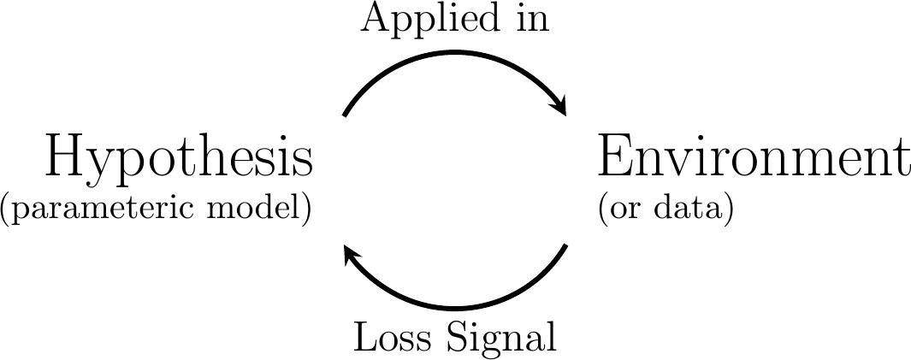
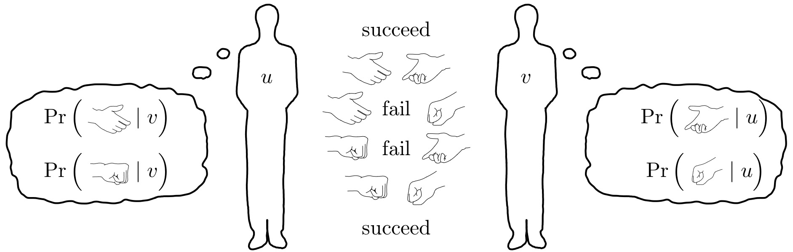
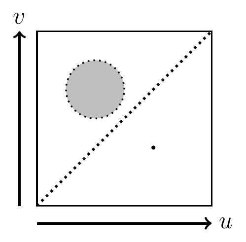
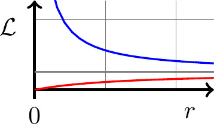
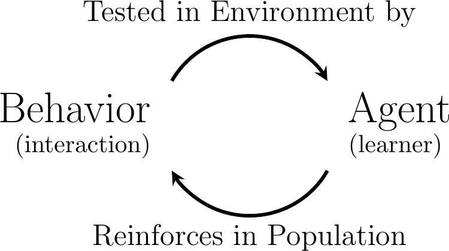

Emergent
Evolutionary Dynamics
in
Multiagent Systems
Evolutionary Dynamics
in
Multiagent Systems
Reilly Raab
March 27, 2024
1. About Reilly
PhD (just last week!)
in Computer Science and Engineering
at UC Santa Cruz
|
Dissertation: |
Machine Learning and the Multiagent Alignment Problem. |
|
Background: |
|
2. Dissertation Work
Dynamics of multiagent systems. Bias and fairness in machine learning.
- Socially consequential, data-driven policy.
- Population of affected individuals.
- Account for dynamical feedback.
How can we intervene on policy to ensure “aligned” outcomes?
3. Dissertation-Related Publications
Unintended selection: Persistent qualification rate disparities and interventions.
NeurIPS, volume 34, 2021. (Spotlight paper award)
[2] Yatong Chen\({}^\dagger\), Reilly Raab\({}^\dagger\), Jialu Wang, and Yang Liu.
Fairness transferability subject to bounded distribution shift.
NeurIPS, volume 35, 2022.
[3] Tongxin Yin\({}^\dagger\), Reilly Raab\({}^\dagger\), Mingyan Liu, and Yang Liu.
Long-term fairness with unknown dynamics.
NeurIPS, volume 36, 2023.
[4] Reilly Raab, Ross Boczar, Maryam Fazel, and Yang Liu.
Fair participation via sequential policies.
AAAI, volume 38, 2024.
\(\dagger\) Equal contribution
4. This Talk
Connections between evolution and learning.
A fundamental mathematical relationship.
A model of emergent social norms informed by features.
Reinterpretation of multiagent dynamics.
5. Overview
- Conjugate Natural Selection.
- Evolutionary Dynamics.
- Learning Dynamics.
- Main Result.
- A Model for the Self-Organization of Social Roles.
- The Model
- Simulation Results.
- Theoretical Results.
- Emergent Evolutionary Dynamics.
- Beyond Traditional Replicators.
- Reinterpreting Multiagent Dynamics.
6. Related Publications
[5] Reilly Raab, Luca de Alfaro, and Yang Liu.
Conjugate Natural Selection.
preprint (arXiv), 2022.
[6] Reilly Raab, Luca de Alfaro, and Yang Liu.
A Model for the Self-Organization of Social Roles.
preprint, 2024.
1. Conjugate Natural Selection
[5] Reilly Raab, Luca de Alfaro, and Yang Liu.
Conjugate Natural Selection.
preprint (arXiv), 2022.
1. Conjugate Natural Selection
- Evolutionary Dynamics
- Learning Dynamics
- Main Result
7. Evolution: Mechanisms
- Heritability.
- Strategies can replicate.
- Variation.
- Replication is imperfect.
- Reproductive advantages.
- Strategies are selected.
8. Evolution: Dynamics
Evolution describes how distributions change.

9. The Replicator Equation
Consider the distribution over all possible strategies \(h\).
Interpret “fitness” as exponential growth rate (no mutation).
After re-normalization,
10. Evolutionary Game Theory
|
Hawk-Dove (Game of Chicken).
\begin{align}
\mathscr{L}(k) &= 2 \rho(k) - \rho(v).\\
\mathscr{L}(v) &= \phantom{2}\rho(k).
\end{align}
|
Prisoner’s Dilemma.
\begin{align}
\mathscr{L}(d) &= \phantom{2}\rho(d) - \rho(c).\\
\mathscr{L}(c) &= 2\rho(d).
\end{align}
|
Rock-Paper-Scissors.
\begin{align}
\mathscr{L}(r) &= \rho(p) - \rho(s).\\
\mathscr{L}(p) &= \rho(s) - \rho(r). \\
\mathscr{L}(s) &= \rho(r) - \rho(p).
\end{align}
|
|
Stable equilibrium at
\begin{equation}
\begin{bmatrix}\rho(k) \\ \rho(v)\end{bmatrix} = \begin{bmatrix}1\\ 1\end{bmatrix}.
\end{equation}
|
Stable equilibrium at
\begin{equation}
\begin{bmatrix}\rho(d) \\ \rho(c)\end{bmatrix} = \begin{bmatrix}1 \\ 0\end{bmatrix}.
\end{equation}
|
Cyclic dynamics centered at
\begin{equation}
\begin{bmatrix}\rho(r) \\ \rho(p) \\ \rho(s) \end{bmatrix} = \begin{bmatrix}1/3 \\ 1/3 \\ 1/3 \end{bmatrix}.
\end{equation}
|
[Friedman and Sinervo (2016)].
11. Bayesian Inference as Natural Selection
Interpret \(\rho(h)\) as distribution over hypotheses \(h\), loss as surprisal.
|
Discretized Replicator Equation:
\begin{equation}
\rho^{t+1}(h) = \rho^{t}(h) \frac{\exp[-\mathscr{L}_{\rho^{t}}(h)]}{\overline {\exp[-\mathscr{L}_{\rho^{t}}]}}.
\end{equation}
|
Bayes’ Theorem:
\begin{equation}
P(h \mid x) = P(h) \frac{\displaystyle P(x \mid h) }{\displaystyle P(x)}.
\end{equation}
|
\(\Pr(x \mid h)\) consistent with “probability of survival” for \(h\) in state \(x\).
(Thms 3, 4): Novel generalizations of these results.
1. Conjugate Natural Selection
- Evolutionary Dynamics
- Learning Dynamics
- Main Result
12. Learning
Minimize loss \(\mathcal{L}\) for a function \(f\) parameterized by \(\boldsymbol{\theta}\).

- Supervised Learning
- Unsupervised Learning
- Reinforcement Learning
13. Gradient Descent
ML’s work-horse algorithm:
Problem:
Dynamics vary with change of basis for \(\boldsymbol{\theta}\)!
14. Iterative Refinement
When \({\rm D}\) is Euclidean,
Solve for minimum:
Vanilla gradient descent.
15. Alternative Metrics \({\boldsymbol{\rm D}}\)
Metric can depend on:
- The parameters \(\boldsymbol{\theta}\).
- Euclidean, Mahalanobis.
- Previous updates.
- Momentum, Nesterov acceleration.
- \(\colorbox{#ddd}{$\text{The function } f_{\boldsymbol{\theta}} \colon \mathcal{X} \to \mathcal{Y}$}\).
- Natural or covariant gradient.
- Independent of parameterization.
- \(\colorbox{#ddd}{$\text{Probability distributions } \rho_{\boldsymbol{\theta}} \text{ over } \mathcal{H}$}\).
Many flavors to choose from.
16. The Fisher-Rao Metric
Parameterize probability distributions \(\rho_{\boldsymbol{\theta}}\) over \(\mathcal{H}\).
Measure size of \(\dot{\boldsymbol{\theta}}\) by marginal information about \(\rho_{\boldsymbol{\theta}}\).
17. Natural Gradient Descent
|
Euclidean Metric \(\qquad \implies\) |
Vanilla gradient descent. |
|
\begin{equation}
{\rm D}(\mathbf{u}) = \frac{1}{2} \sum_{i,j} u^{i} \delta_{ij} u^{j}.
\end{equation}
|
\begin{equation}
\dot{\theta}^{i} = - \sum_{j} \delta^{ij} \partial_{j} \mathcal{L}(\boldsymbol{\theta}).
\end{equation}
|
|
Fisher Divergence \(\qquad \implies\) |
Fisher-Rao natural gradient descent (FR-NGD). |
|
\begin{equation}
{\rm D}(\mathbf{u}) = \frac{1}{2} \sum_{i,j} u^{i} F_{ij}(\boldsymbol{\theta}) u^{j}.
\end{equation}
|
\begin{equation}
\dot{\theta}^{i} = - \sum_{j} \big[ F(\boldsymbol{\theta})^{\dagger} \big]^{ij} \partial_{j} \mathcal{L}(\boldsymbol{\theta}).
\end{equation}
|
1. Conjugate Natural Selection
- Evolutionary Dynamics
- Learning Dynamics
- Main Result
18. Evolution vs Learning
Evolution corresponds to learning at the population level.
Its dynamics can be optimally approximated with FR-NGD.
19. Main Result
Thm 1: \(\quad\) FR-NGD of Population Loss Optimally Approximates Replicator Dynamics.
|
Replicator Dynamics:
\begin{equation}
\dot{\rho}^{\star}(h) = \rho(h) \Big[ \overline{\mathscr{L}_{\rho}} - \mathscr{L}_{\rho}(h) \Big].
\end{equation}
|
Fisher-Rao Natural Gradient Descent of \(\mathcal{L}(\boldsymbol{\theta}) = \overline{\mathscr{L}_{\rho_{\boldsymbol{\theta}}}}\):
\begin{align}
\dot{\theta}^{i} &= - \sum_{j} \big[ F(\boldsymbol{\theta})^{\dagger} \big]^{ij} \partial_{j} \mathcal{L}(\boldsymbol{\theta}). \\[0.5em]
\dot{\rho}_{\boldsymbol{\theta}}(h) &= \sum_{i} \frac{\partial \rho_{\boldsymbol{\theta}}(h)}{\partial \theta^{i}} \dot{\theta}^{i}.
\end{align}
|
20. Intuition: Rome to Chicago
Gradient descent is to a Mercator map as FR-NGD is to a globe.
21. As Least-Squares
Normal equation of a least-squares problem, \(\sum_{h,j} A^{ih} A_{hj} x^{j} = \sum_{h} A^{ih} b_{h}\):
A projection of the replicator equation:
Thm 2 of paper describes preserved dynamics.
22. Applications
|
|
Sampled hypotheses, loss distribution over time. |
23. Applications (Continued)
Pros
- Continuous, high-dimensional \(\mathcal{H}\).
- Highly non-convex \(\mathscr{L}(h)\).
- Projection as alternative to mutation.
- Analytic \(F^{\dagger}\) for exponential families.
Cons
- \(F^{\dagger}\) is \(\mathcal{O}^{\approx 2.37}(n)\), in general.
24. Conceptual Implications
Evolution corresponds to learning at the population level.
(Population of competing strategies).
What about populations of learning individuals?
(Multiagent Systems)
2. A Model for the Self-Organization
of Social Roles
of Social Roles
[6] Reilly Raab, Luca de Alfaro, and Yang Liu.
A Model for the Self-Organization of Social Roles.
preprint, 2024.
25. Social Roles
Norms based on observable features.
- Gender.
- Race.
- Age.
- Mass.
- Maneuverability.
- Sensor accuracy.
2. A Model for the Self-Organization
of Social Roles
of Social Roles
- The Model
- Simulation Results
- Theoretical Results
26. A Game
The greeting game.

Anti-symmetric version: The door-holding game.
27. Repeated Play
- Real-valued features \(u, v\), additive noise \(\eta\).
- Binary actions \(\{0, 1\}\); zero-one loss.
- Interaction graph \(g(u, v)\).
“Social Learning”\({}^{\ddagger}\)
- Interact with others.
- Apply norms for learned social role.
- Reinforce corresponding roles for others.
- Needn’t know your own features.
\({}^{\ddagger}\)[Sen and Airiau (2007); Mukherjee, Sen, and Airiau (2007)]
28. Stochastic Annealing
Define increase in loss for \(u\) observing \(v\) of switching policy:
Learning Rule:
|
Switch to opposite policy |
with probability | |
|
\begin{equation}
\pi(u, v) \leftarrow 1 - \pi(u, v),
\end{equation}
|
\begin{equation}
\frac{1}{2}\max\big[1, e^{-\beta S}\big].
\end{equation}
|
\begin{equation}
(\beta > 0)
\end{equation}
|
29. As a Spin-Glass System
Spin-glass system with non-local interactions.
Local coupling to neighbors (Ising).

Non-local coupling in joint feature space (ours).
2. A Model for the Self-Organization
of Social Roles
of Social Roles
- The Model
- Simulation Results
- Theoretical Results
30. Simulation
|
\begin{align}
\text{Yellow:} & \quad \pi(u, v) = 1\\
\text{Blue:} & \quad \pi(u, v) = 0 \\
\text{Brightness:} & \quad g(u,v)
\end{align}
Interpretations:
|
| |
|
|
31. Implementation
Discretize feature space \(u \in [N]\). Represent \(\pi\) as \((N \times N)\) array. Update with GPU kernel.
@taichi.data_oriented
class Model:
self.pi = taichi.field(float, shape=(N, N))
@taichi.kernel
def step_main_loop():
# parallelized by jit compiler
for u, v in self.pi:
self.pi[u, v] = do_update(u, v)
self.t += 1
32. Multiple Equilibria of Bimodal Interactions
33. Experiments: Interaction Modality
Probability of uniform policies decreases with feature mode separation.
34. Experiments: Noise
Probability of uniform policies increases with observation noise.
2. A Model for the Self-Organization
of Social Roles
of Social Roles
- The Model
- Simulation Results
- Theoretical Results
35. Theoretical Results
- Decision Boundaries
- Symmetry under exchange \(u \leftrightarrow v\).
- Dynamics driven by curvature of graph \(g\).
Loss for \(u, v\):
36. Decision Boundaries
Expected action \(a(u, v)\) for true pairings:
Action flips across boundary \(f(u)\).
Approximate
Sigmoid \(\sigma\); scale parameter \(\varepsilon > 0\).
37. Symmetry
Calculus of variations with non-local Lagrangian! .
Symmetric \(\ell\), \(\varepsilon \ll 0\), ensures
This implies symmetry of \(f\):
38. Line-Integral Approximation
39. Experimental Validation
Initial state

stable.
contracts.
expands.
3. Emergent Evolutionary Dynamics
40. Beyond Traditional Replicators
Competition between observable behaviors, for each feature pair \((u, v)\).
\(\forall u, v, \qquad \pi=1 \quad \text{competes with} \quad \pi=0.\)
Model competition with replicator equation:
41. Replicator Dynamics
42. Replicator Dynamics with Noise
43. Reinterpreting Multiagent Dynamics
Learning:
Evolution enabled by Multiagent Learning:

44. An Ecology of Multiagent Behaviors
Multiagent systems are platforms for evolutionary dynamics.
Learning provides mechanisms.
- Heritability.
- Variation.
- Reproductive Advantages.
Ecology of behaviors.
- General-sum games.
- Coevolving niches.
4. Conclusion
45. Recapitulation
- Conjugate Natural Selection.
- Evolutionary Dynamics.
- Learning Dynamics.
- Main Result.
- A Model for the Self-Organization of Social Roles.
- The Model.
- Simulation Results.
- Theoretical Results.
- Emergent Evolutionary Dynamics.
- Beyond Traditional Replicators.
- Reinterpreting Multiagent Dynamics.
46. Takeaways
Relationship between evolution and learning.
- Evolution corresponds to learning at the population level.
- Its dynamics can be optimally approximated with FR-NGD.
New work on emergent social roles.
- Spin-glass system.
- Emergent evolutionary dynamics.
Interpretation of Multiagent Systems.
- Platform for co-evolving behaviors.
Thank you.
Questions?
Supplementary Slides
47. CNS: Preserved Dynamics
Thm 2: \(\quad\) Linear combinations of score, e.g.,
obey the Price Equation:
48. Greeting Game Equations
First convolution. Action of \(u\) paired with\(v\).
Second convolution. Treatment of \(u\) observing \(v\).
Loss
49. Supplementary Formulas
Neural Tangent Kernel
Simple Harmonic Motion
50. Additional References
Daniel Friedman and Barry Sinervo. Evolutionary games in natural, social, and virtual worlds. Oxford University Press, 2016.
Mohammad Emtiyaz Khan, and Håvard Rue. The Bayesian learning rule. arXiv preprint, 2021.
Partha Mukherjee, Sandip Sen, and Stéphane Airiau. Norm emergence in spatially constrained interactions. Adaptive and Learning Agents Workshop at AAMAS, volume 7, 2007.
Sandip Sen and Stéphane Airiau. Emergence of norms through social learning. IJCAI, volume 1507, 2007.
51. Notes to Self
- f for full screen.
- s for presenter mode.
- g + 123 to jump to slide 123.
- esc to zoom out/in.
- ., v, or / to toggle black screen.
Adjust aspect ratio: In browser’s dev console, call scale:
// argument is pixel height for fixed width of 1080.
scale(500); // shorter, wider screen
scale(650); // default
scale(750); // taller, narrower screen